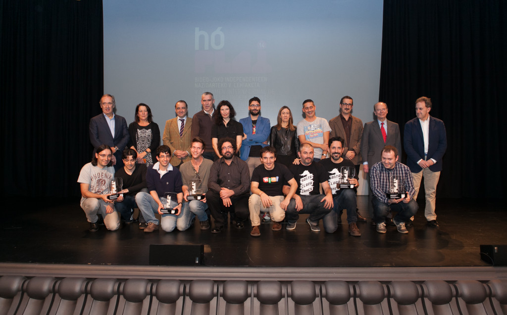

HassleHeart Best Basque Videogame at hóPLAY'14!
Definition of happiness
Yes, HassleHeart won the BEST BASQUE VIDEOGAME AWARD at the fifth International Festival of Independent Games hóPLAY !!
@ipuntom and @gravstar trying to make a congrats speach... Photo by: Eva Zubero Zuluaga
The Festival started very well, as nominated, we had the oportunity to showcase HassleHeart and have a panel to talk about the game and our studio.
@gravstar during the panel. First HassleHeart sketches were unveiled ;)
We had a great time talking with other studios, media and people who came to the hóPLAY Festival to try and play games (HassleHeart included!).
Networking area
 @gravstar trying the Fronton Occulus Rift version from our
@PulsarConcept friends
@gravstar trying the Fronton Occulus Rift version from our
@PulsarConcept friends
People playin (and enjoying!!) HassleHeart
As hóPLAY finalist developer, Santa Clara Games had the chance to explain HassleHeart in the Big Indie Pitch to Steel Media journalists. What an intense and very funny experience!
We came to play so, get ready to pitch!
We were so happy and so surprised words couldn't get out of our mouths! It's been a wonderful moment! It gives us so much energy and fuel to keep making games that we are looking forward to December 23^rd^ to launch HassleHeart's Final Version and start working in our next games! Yes, games in plural ;) Stay tunned for more news to come!
Alea jacta est
We want to thank you all, without your support this wouldn't have come true, THANK YOU SO MUCH!! \<3 \<3 \<3
 All hóPLAY'14 winners. Photo by: Eva Zubero Zuluaga
Photo by: Eva Zubero Zuluaga